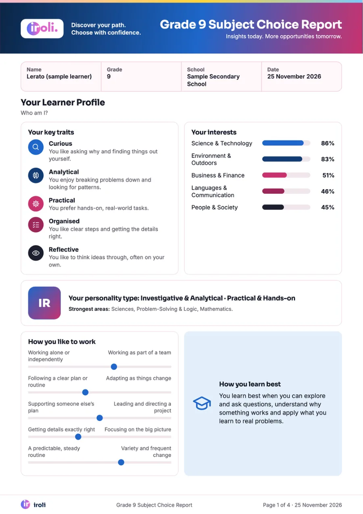
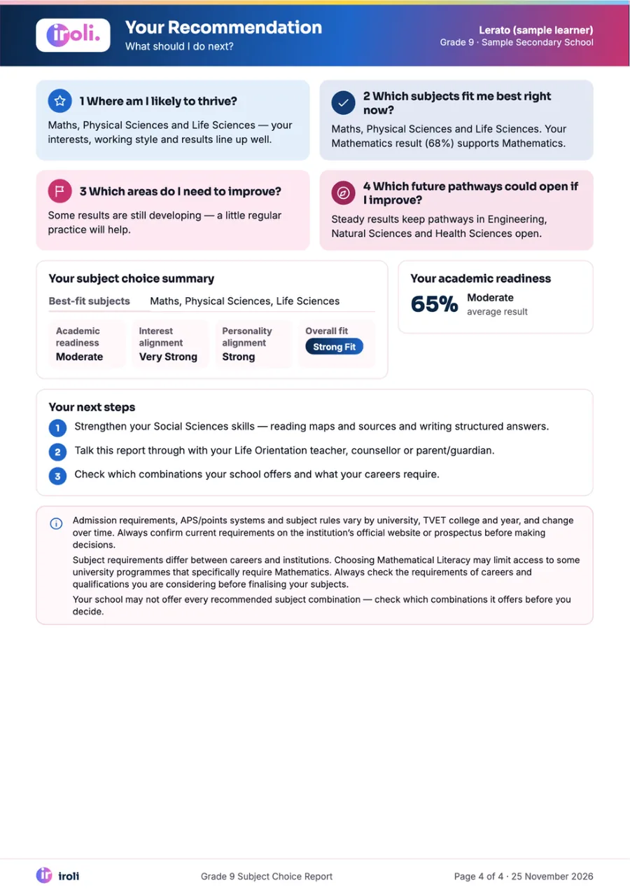

Career guidance and Grade 10 subject choice in one place. Start with 4 quick questions, no account needed.
A school class code or an individual licence unlocks the full assessments and your report.
The full report for a made-up Grade 9 learner: profile, subject fit, pathways and next steps, on four pages.

1. Your learner profile
4. Your recommendationWhatever grade you're in, Iroli starts from who you are: your interests, strengths, subjects and marks, never marks alone.
The Subject Choice Assessment matches subjects to what you enjoy, how you work and how you're doing.
A personality assessment matched against 77 real careers across 15 fields.
Real degree programmes and entry requirements from a national course-requirements dataset.
Every result is framed as “worth exploring”, never “you can't become this”: a starting point for a conversation, not a verdict on your future.
The full report turns your child's answers and marks into something you can sit down and discuss at home.
If their school doesn't use Iroli, an individual licence is a once-off R300 and lasts until the end of Grade 12.
Iroli gives teachers and Life Orientation staff a class-wide view, so conversations go to the learners who need them most.
Learners join your class with one code. Seats are tracked for you.
In class or at home, on a phone or a computer.
Pathway trends, subject demand and the learners requiring guidance, with a class summary you can download. Each teacher sees only the classes they manage.
Learners see only their own results, and a teacher sees only the classes they manage. Learner data is never sold or used for advertising. Read our Privacy Notice
TOP CAREER PATHWAYS
LEARNERS REQUIRING GUIDANCE
Answer 4 quick questions for a first look at careers worth exploring. It's free and needs no account.
Create an account, then use a school class code or an individual licence for the personality assessment and, in Grade 9, the subject-choice assessment.
Your personality type, best-suited careers and Grade 10 subject recommendations, ready to print or share.
The 4-question quiz is free and needs no account. The full assessments and report need a licence: a school class code, or an individual licence for a once-off R300 that lasts until the end of Grade 12. See pricing
R300 once-off per learner, covering them until the end of Grade 12, with class codes and the teacher dashboard included. There is no payment in the app: we invoice the school, and a trial licence is available while that is arranged. Make a school enquiry
You can always see your own. Teachers see only the learners in the classes they manage, and the Iroli team who run the platform can see learner records to support schools. No other learner can see your data, and it is never sold or used for advertising. Read our Privacy Notice
Yes. Iroli runs in the browser on any phone, tablet or computer, with nothing to install. Your report downloads as a PDF.
Grades 9 to 12. Grade 9 learners also get the Subject Choice Assessment for choosing Grade 10 subjects. If you're not at school, you can still use Iroli to explore careers.
Start with the free 4-question quiz, no account needed. A school class code or an individual licence unlocks the full assessments and your report.